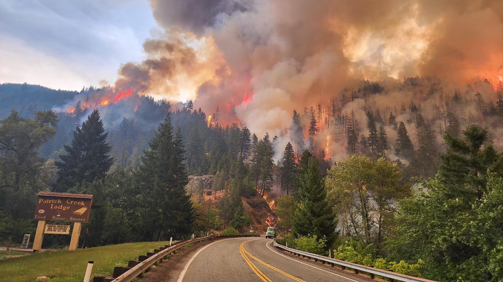

As we confront the escalating challenge of wildfires in a changing climate, it's crucial to recognize the urgency of the situation. These fires are not isolated events, they have far reaching consequences that demand immediate action. Beyond the physical destruction, they jeopardize air quality, public health, and economic stability. We must come together to address the root causes of wildfires—climate change —and implement robust strategies for wildfire management. We need to prioritize sustainable land management practices, invest in advanced firefighting techniques, and commit to reducing greenhouse gas emissions to mitigate the conditions driving more frequent and intense wildfires. The time for action is now , and it's a call to protect our communities, our environment, and our future.
Wildfires are unplanned fires that burn in forests, grasslands and other ecosystems, and they can start with a natural event like a lightning strike, or as the result of human activity. Campfires, discarded cigarettes, and electrical equipment like downed power lines all spark wildfires. But climate change can make environments more susceptible to burning. Increasing severe heat and drought due to climate change can fuel wildfires. Hotter temperatures evaporate more moisture from soil and vegetation, drying out trees, shrubs and grasses and turning leaf litter and fallen branches into kindling.
Wildfires begin when an ignition source, like lightning, human activities, or machinery, encounters dry vegetation, turning it into fuel. Prolonged droughts and hot weather contribute to this flammable environment. Strong winds can carry embers, causing spot fires and complicating containment. The topography of the area, including steep slopes and canyons, influences the wildfire's behavior. When these elements align, wildfires rapidly expand, posing a significant threat to both nature and human communities, emphasizing the critical need for prevention and effective management.